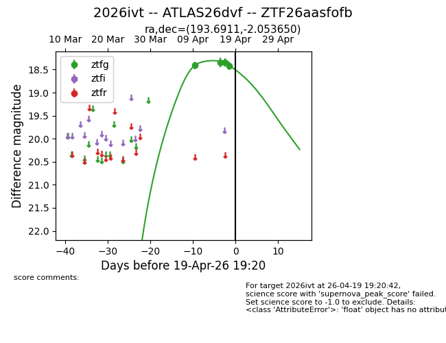
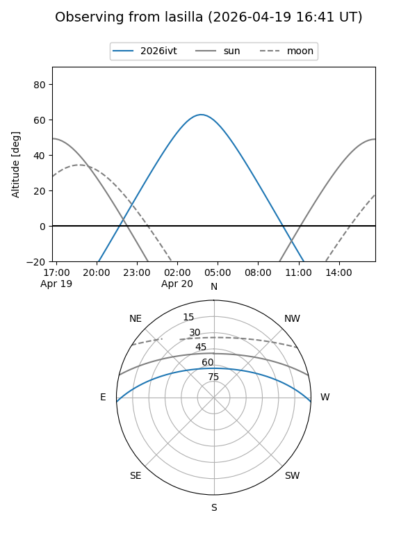
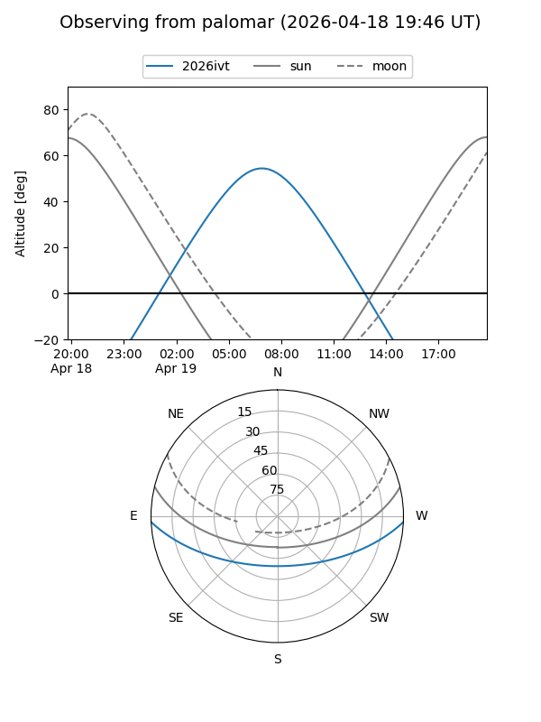
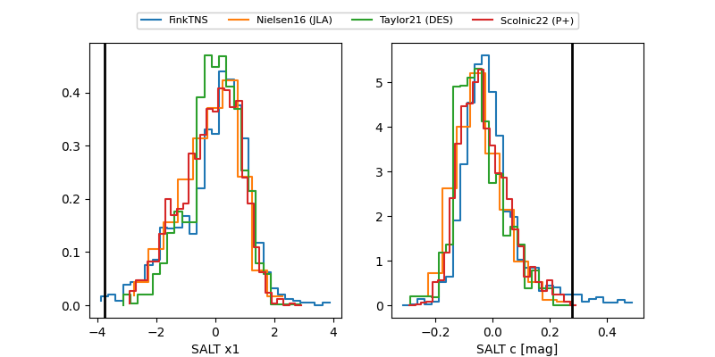

2026ivt
Target 2026ivt at 2026-04-19 19:31
Aliases and brokers:
FINK: link
Lasair: link
ALeRCE: link
TNS: link
YSE: link
alt names
ZTF26aasfofb (ztf,fink_ztf)
2026ivt (tns,yse)
ATLAS26dvf (atlas)
Coordinates:
equatorial (ra, dec) = 193.6911,-2.05365
equatorial (HMS+DMS) = 12:54:45.87,-02:03:13.14
galactic (l, b) = (304.6360,+60.80709)
Flags:
Photometry:
last ztfg=18.42
4 ztfg detections
Lightcurve

Visibility


Additional plots
